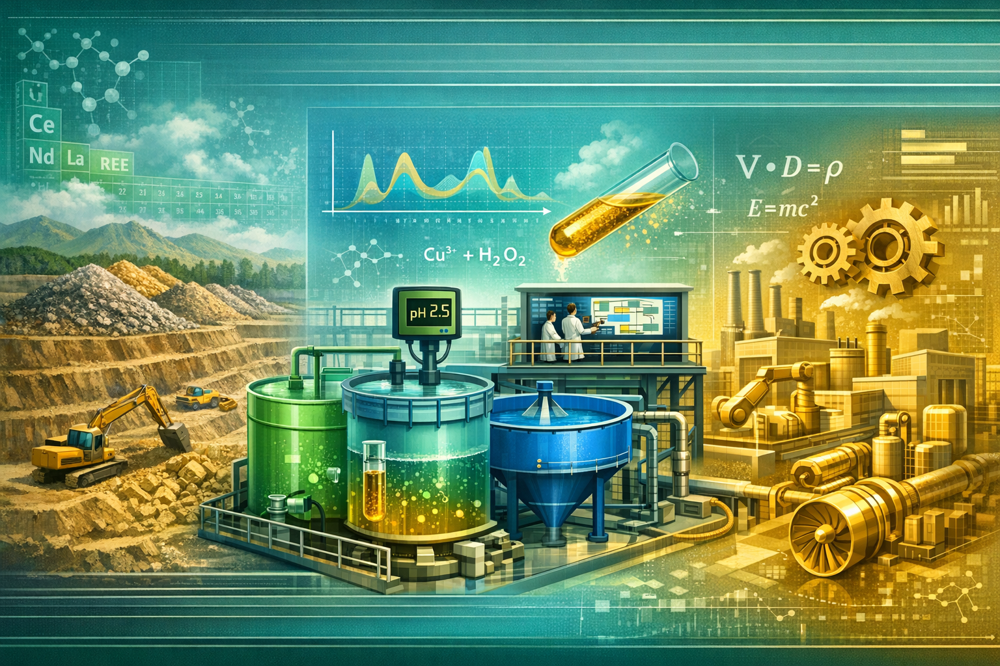

ETE: A Metodologia Brasileira que Simplifica a Hidrometalurgia Seletiva
Introdução: Do Minério ao Metal, com Método
Hidrometalurgia é o conjunto de processos que usam soluções aquosas para extrair, purificar ou refinar metais a partir de minérios ou de materiais reciclados. Quando o objetivo é separar um metal de outros (ou um grupo de elementos, como terras raras), a coisa fica complexa: pH, temperatura, ordem das etapas e equilíbrios químicos definem o que precipita e o que permanece em solução. No Brasil, mineração e refino dependem cada vez mais de metodologias que simplifiquem esse controle — e de ferramentas que permitam simular e planejar antes de ir à planta.
A metodologia ETE (aplicada ao refino e à hidrometalurgia seletiva) e o simulador Minerador 4.0 são a contribuição da Cara Core nesse espaço: deep tech brasileira que une engenharia química, matemática (equilíbrios, Kps, precipitação em cascata) e software para que o engenheiro de processo e o pesquisador possam modelar e entender o comportamento do sistema. Este artigo fala do problema da hidrometalurgia no Brasil, do que é a metodologia ETE, de como o simulador funciona, da matemática e engenharia envolvidas, das aplicações industriais e de por que isso importa para o país.
1. O Problema da Hidrometalurgia no Brasil
O Brasil é rico em minérios e em potencial de refino, mas a hidrometalurgia — em especial a seletiva, que separa um metal ou um grupo de elementos dos demais — continua complexa. Terras raras (lantanídeos), níquel, cobalto e outros elementos exigem sequências de lixiviação, precipitação e purificação que dependem de pH, concentração e ordem das etapas. Erro no desenho do processo gera perda de produto, custo ambiental e retrabalho. A indústria precisa de metodologias claras e de ferramentas que permitam testar cenários antes de escalar.
Além disso, há dependência de know-how e software importados. Metodologias e simuladores desenvolvidos no país reduzem essa dependência e permitem que engenheiros e pesquisadores falem a mesma língua — e que a formação técnica e a indústria se aproximem. O problema não é só técnico; é de soberania e de capacitação.
2. O Que É a Metodologia ETE
A metodologia ETE é uma abordagem brasileira aplicada ao refino e à hidrometalurgia seletiva. Ela organiza o processo em etapas controladas: uso de pH, temperatura e sequência de reações para promover a precipitação seletiva de compostos, separando o que interessa do que não interessa. Decantação, filtração e reciclo de soluções fazem parte do desenho. A ideia é que o engenheiro tenha um roteiro claro — uma metodologia — em vez de depender só de experiência tácita ou de literatura dispersa.
Simplificar não significa ignorar a física e a química; significa estruturar o conhecimento de forma que possa ser ensinado, replicado e simulado. A ETE faz isso ao definir critérios e etapas que podem ser modelados em software e validados em laboratório ou em planta piloto.
3. Como o Simulador Funciona
O Minerador 4.0 é o simulador da Cara Core que implementa a metodologia ETE: o usuário configura fluxos, condições (pH, concentrações, ordem das etapas) e o sistema calcula e exibe o comportamento esperado — o que precipita, o que permanece em solução, como uma etapa afeta a outra. É uma ferramenta para o engenheiro de processo e para o pesquisador testarem cenários sem precisar ir ao laboratório ou à planta a cada hipótese.
Aplicações como o Ouro 4.0 adaptam a mesma base para contextos específicos — por exemplo, separação de lantanídeos. O produto é distribuído como executável (Windows), com releases disponíveis na loja do ecossistema Cara Core. O simulador não substitui o laboratório nem a planta; complementa, permitindo planejamento e educação com a mesma linguagem da metodologia ETE.
4. Matemática e Engenharia Envolvidas
A hidrometalurgia seletiva repousa em equilíbrios químicos: constantes de solubilidade (Kps), efeito do pH na precipitação, estequiometria das reações. O simulador incorpora essa matemática para que o usuário veja, em tempo real ou em batch, o resultado de mudar uma variável — por exemplo, o pH de uma etapa. Precipitação em cascata (uma etapa após a outra, com condições controladas) é o coração de muitos processos seletivos; modelar essa cascata no software reduz tentativa e erro na prática.
Engenharia e matemática andam juntas: o modelo precisa ser simples o suficiente para ser útil e rigoroso o suficiente para ser confiável. A metodologia ETE e o Minerador 4.0 buscam esse equilíbrio — acessível ao engenheiro que opera ou projeta, sem abrir mão do fundamento científico.
5. Aplicações Industriais
As aplicações vão da mineração ao refino e à reciclagem: onde há lixiviação, precipitação e separação de metais ou de terras raras, a metodologia ETE e o simulador podem apoiar o desenho e a otimização do processo. Empresas e centros de pesquisa podem usar o Minerador 4.0 (e variantes como o Ouro 4.0, para separação de lantanídeos) para planejar etapas, comparar cenários e treinar equipes. Na educação, o simulador serve para ensinar hidrometalurgia e equilíbrios químicos de forma prática — o aluno altera parâmetros e vê o efeito, sem precisar de laboratório completo na primeira etapa.
O produto é deep tech: nasce de domínio técnico (engenharia química, química analítica) e vira software que a indústria e a academia podem usar. Não é genérico; é especializado no problema que resolve.
6. Por Que Isso Importa para o País
Soberania tecnológica passa por dominar metodologias e ferramentas em setores estratégicos. Mineração e refino são um deles: terras raras, metais nobres e elementos críticos para a transição energética dependem de processos hidrometalúrgicos. Ter metodologia e simulador desenvolvidos no Brasil reduz dependência de pacotes e de consultorias estrangeiras e cria espaço para formação de engenheiros e pesquisadores que falem a língua da ETE e do Minerador 4.0.
Além disso, deep tech brasileira em nichos como hidrometalurgia diferencia a Cara Core e o ecossistema nacional: não é só software de gestão; é software que embute conhecimento de engenharia e que pode ser usado na indústria e na educação. Por que isso importa para o país? Porque o país precisa de mais gente e mais ferramentas que dominem o processo — do minério ao metal — e a metodologia ETE e o simulador são um passo nessa direção.
Conclusão: Metodologia e Ferramenta
ETE é a metodologia brasileira que simplifica a hidrometalurgia seletiva; o Minerador 4.0 (e o Ouro 4.0, para separação de lantanídeos) é a ferramenta que coloca essa metodologia no computador do engenheiro e do pesquisador. Juntos, eles permitem simular, planejar, educar e reduzir a distância entre o conhecimento acadêmico e a aplicação industrial. Para o país, isso significa menos dependência e mais capacidade de projetar e operar processos de refino e separação. Para a Cara Core, é a aposta em deep tech que faz diferença onde a complexidade é alta e a oferta local é pouca.
Hashtags
Contato
- E-mail: suporte@caracore.com.br
- Site: www.caracore.com.br
- LinkedIn: Cara Core Informática
Conecte-se conosco no LinkedIn para mais conteúdos sobre ETE, hidrometalurgia e deep tech.
Seguir no LinkedIn
Artigo publicado em 2 de maio de 2026
© 2026 Cara Core Informática. Todos os direitos reservados.